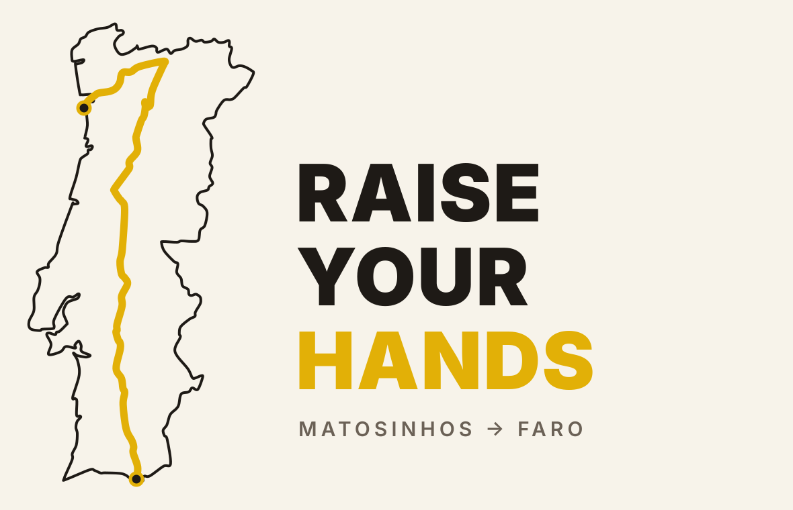
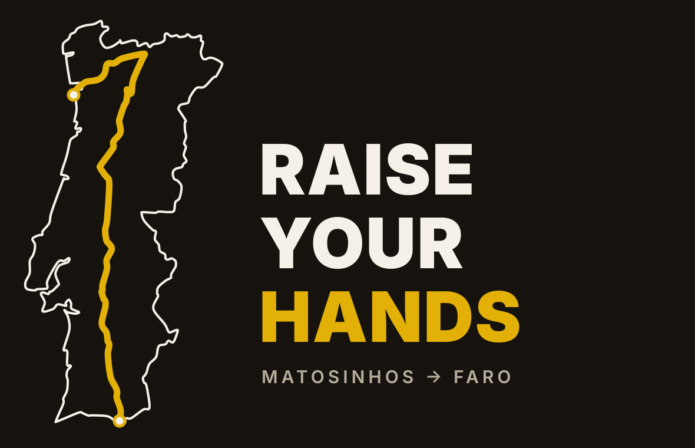
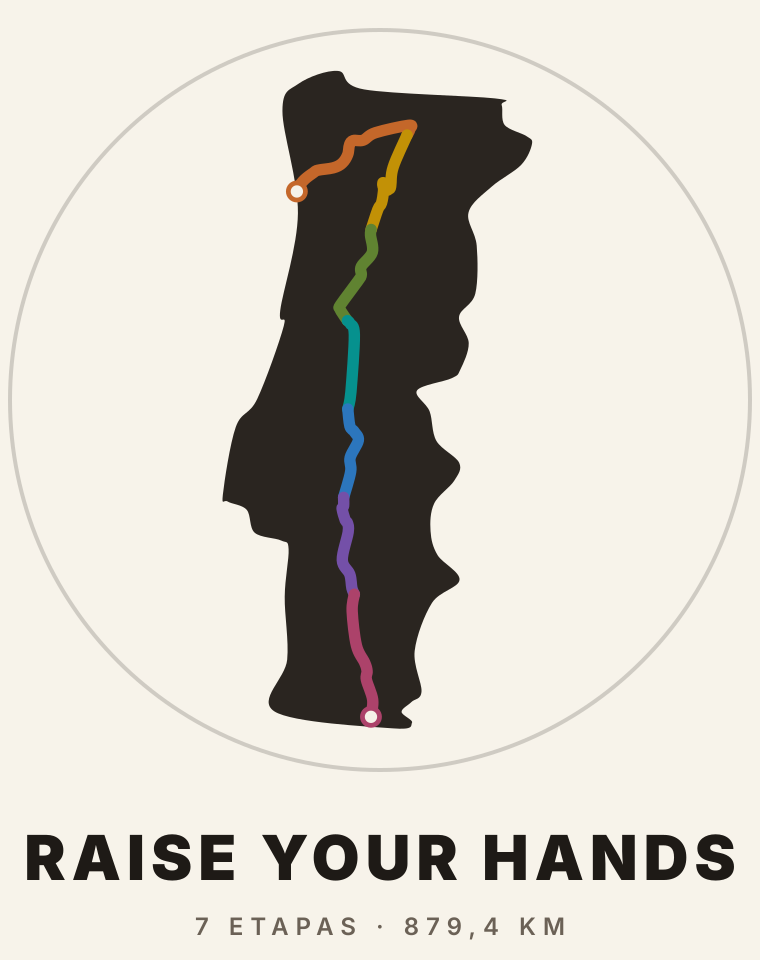
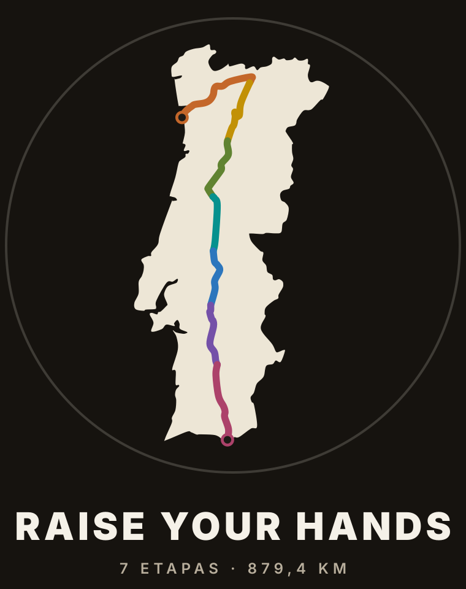
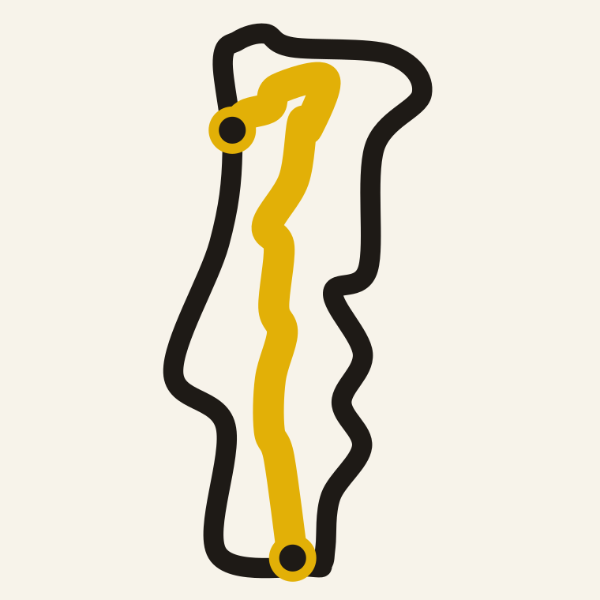
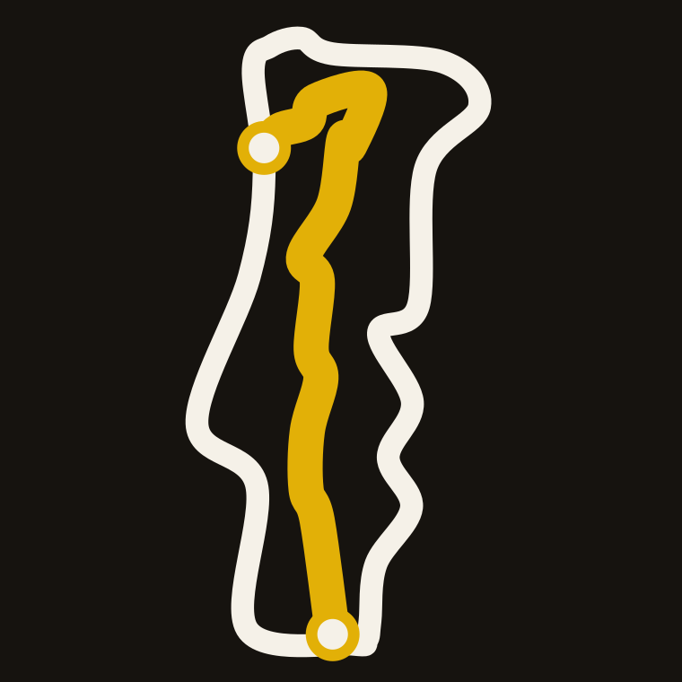
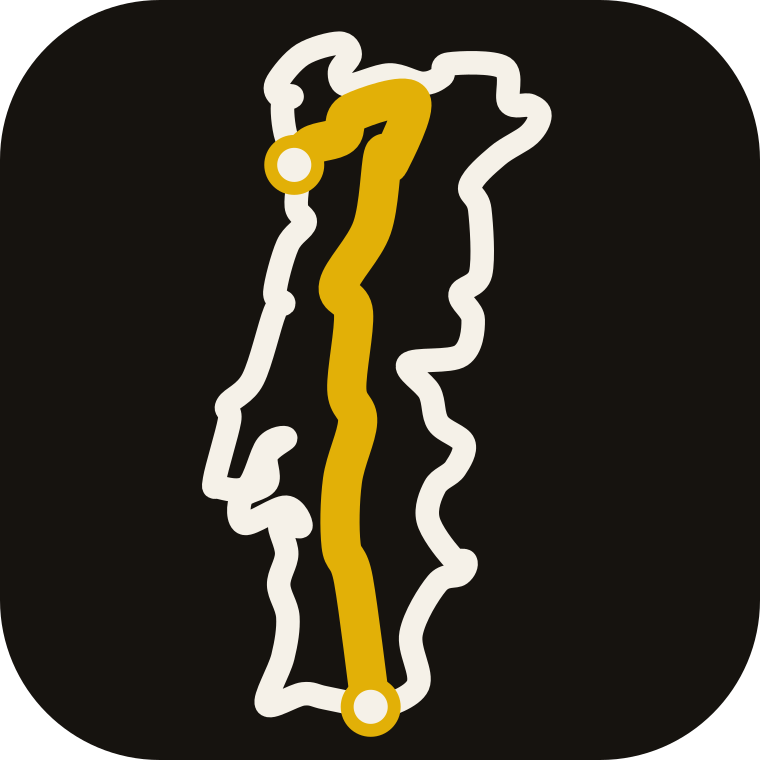

Contorno simplificado a partir do mapa enviado (base Natural Earth, domínio público); traçado vetorizado a partir dos GPX desenhados no mesmo mapa, de Matosinhos (ponto de cima) a Faro (ponto de baixo). Cores das etapas iguais às do mapa. Tipografia: Montserrat (livre). Nenhum símbolo de terceiros.


Logo principal: cabeçalho do site, vídeos e redes. O amarelo liga ao EZ; o contorno fino deixa a rota em primeiro plano.

Selo para camisola, autocolante e capa dos vlogs; as cores ligam ao mapa e à tabela das etapas.


64